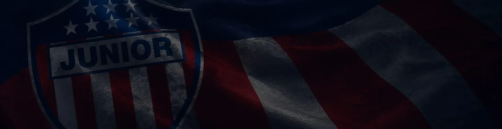
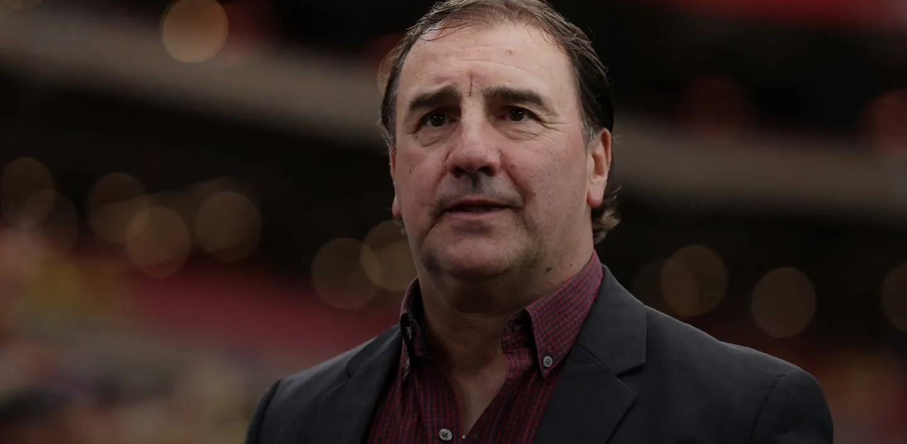
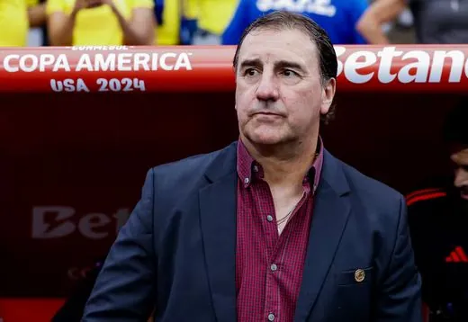
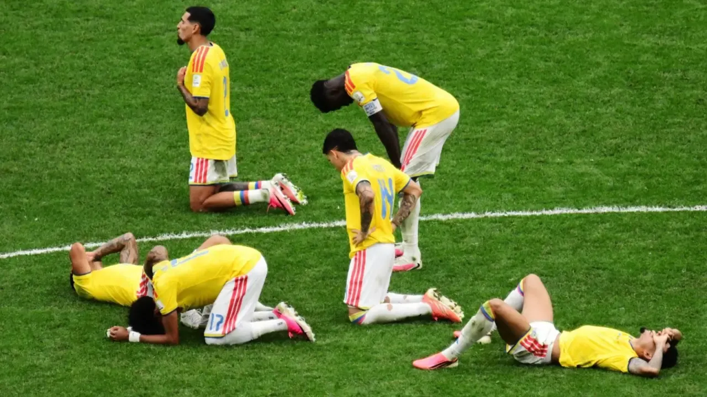

Junior
Video: El medio campo decide Junior vs. Nacional: lo que hay que mirar esta noche
Rivas, Castro y la salida de Nacional por dentro: el análisis del programa con pizarra, datos de la Fecha 19 y las dos bajas que cambian el once.
Junior
Rivas, Castro y la salida de Nacional por dentro: el análisis del programa con pizarra, datos de la Fecha 19 y las dos bajas que cambian el once.




Centro de Partidos presentado por Transelca
El show del viernes, con la previa de la noche, la convocatoria para Perú y Chile y el mercado.

Duración: 18:32 Duración: 22:51
Duración: 22:51 Duración: 31:44
Duración: 31:44Más de 265 videos en el canal. Suscribirse en YouTube (se abre en una pestaña nueva)
| # | Equipo | PJ | DG | Pts |
|---|---|---|---|---|
| , zona de cuadrangulares1 | Junior | 19 | +12 | 39 |
| , zona de cuadrangulares2 | Nacional | 19 | +9 | 38 |
| , zona de cuadrangulares3 | Tolima | 19 | +6 | 35 |
| , zona de cuadrangulares4 | Millonarios | 19 | +4 | 33 |
| , zona de cuadrangulares5 | Medellín | 19 | +2 | 31 |
Cuadrangulares (1.º a 8.º)
Datos de ejemplo · fuente por definir.

ShortDuración: 0:44 ShortDuración: 0:48
ShortDuración: 0:48 ShortDuración: 0:33
ShortDuración: 0:33
ShortDuración: 0:19Estados de ejemplo, definidos por la redacción.
Al aire hasta las 12:00 m.Próximo programa · lunes a las 10:00 a. m.
Míralo aquí, sin salir de la web, o ponte al día con los programas anteriores. Lunes a viernes, 10:00 a. m. a 12:00 m.
Ahora: Apertura y titulares · Después: Junior en primer plano
Los dos llegan con rachas opuestas al sábado en Ibagué; lo que se juegan en la lucha por los cuadrangulares.
Una racha de cuatro partidos sin ganar y un problema de salida que el rival supo explotar. Análisis de ejemplo.
Pasó de suplente a titular en tres semanas. Lo que cambió en su rol y lo que le pide el entrenador.
Cómo se vive un partido grande en Barranquilla, antes y después del pitazo.
Por qué todos tenemos una alineación en la cabeza.
Dos formas de armar el centro de la cancha y lo que cada una le cuesta al equipo.
Síguenos donde prefieras.
Un 6 de noviembre en el archivo del programa
Texto de ejemplo: espacio para la efeméride del día, validada por la redacción antes de publicarse.
Ver el archivoMarcas e instituciones que acompañan a Habla Deportes desde Barranquilla.
Juega con responsabilidad. Solo mayores de 18 años.